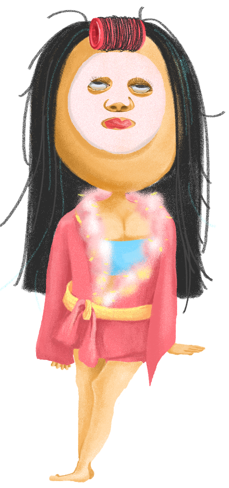

ENEMY
People who stay up late, especially the increasing number of younger people who don’t sleep at night.
The phenomenon not only gains the risk he exposes himself in front of human being during the task, but also he will lose his energy source.
